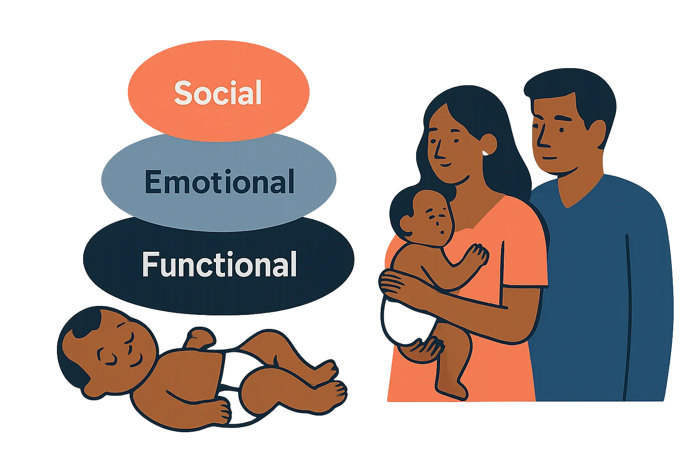

Needs from Baby Diapers: Functional · Emotional · Social

Diaper needs read through a functional, emotional, and social lens, with a sharp commercial whitespace: the mid-premium ₹399–₹699 corridor where no brand owns rash-free skin.
Overnight dryness and rash-free skin dominate every need hierarchy.
Diaper needs stack tightly: overnight absorbency enables parental sleep, skin safety defines brand worth, fit earns daily trust — and rash is an emotional guilt event, not just a product failure. Bar = mention volume; chip = how well the market meets it.
⚙️Functional
Topsheet softness (table-stakes)
830
met
Overnight absorbency
720
partially met
Rash prevention
620
partially met
Fit & leak-guard
480
partially met
Wetness indicator
72
partially met
💗Emotional
Unbroken sleep = permission to rest
540
partially met
Rash guilt = parental failure
410
unmet
Choosing 'the best' = good mother
310
partially met
Doctor validation resolves anxiety
260
partially met
👥Social
Mom-group reviews = primary trust
380
met
Brand as social signal
210
partially met
Influencer / doctor currency
165
partially met
metpartially metunmetbar = mention volume
“Rash guilt — very very worst product, full skin rash for my baby, not recommended.” vs “Keeps baby dry all night without leakage — highly recommended for peaceful sleep.”— the emotional swing: failure = indictment, success = relief · Flipkart · Mass & Premium
◆ Whitespace — where Lovingle can win
FuncRash-free skin, mid-premium corridorThe big one: rash is #1 avoidance (45.7%) yet no ₹399–₹699 brand owns clinically-credible rash-prevention520
EmoPost-rash guilt has no resolutionNo mid-premium brand offers empathetic "if rash happens, here's why + what to do" reassurance280
SocMid-premium lacks social proofThin review pools + no HCP endorsement vs premium's deep validation — inertia barrier155
FuncWetness indicator absent mass/midNewborn/nuclear-household moms rely on it for change-timing confidence62
Mass
Price-first; leakage accepted as trade-off; overnight need least served
Mid-premium
Wants premium overnight at lower cost; most active switcher on rash/leak
Premium
Skin-safety = baseline; competes on prestige, doctor, softness
Needs read → Softness is the only fully-met need — table stakes Lovingle already wins (4.42, highest). The prize is the rash-free mid-premium corridor: functional proof + emotional guilt-resolution + social validation, bundled. Own that trio and you convert trial to loyalty.
Bar = need mention share of diaper-need mentions (31,600 analysed, 2023–2026) · coverage 82% · status from met/partial/unmet coding · full how-met-today + segment detail in the table.